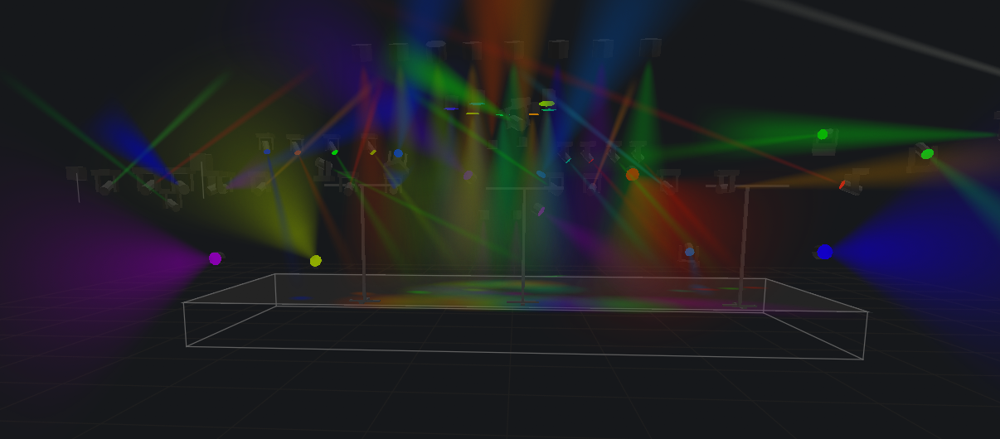
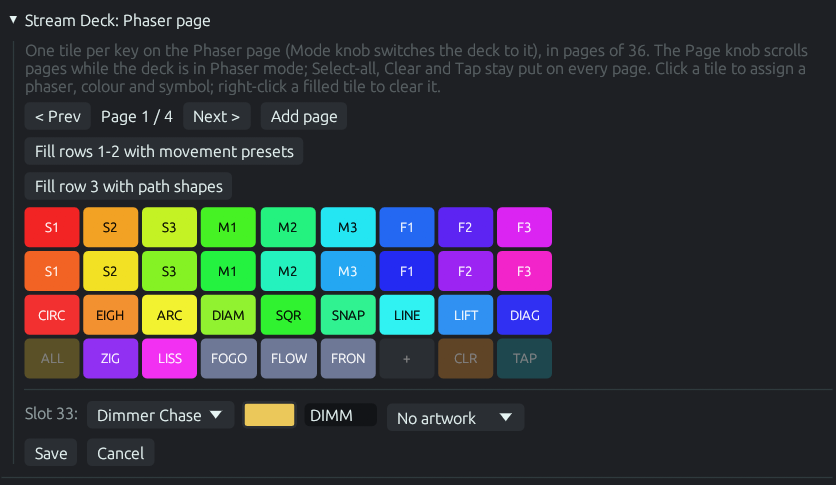
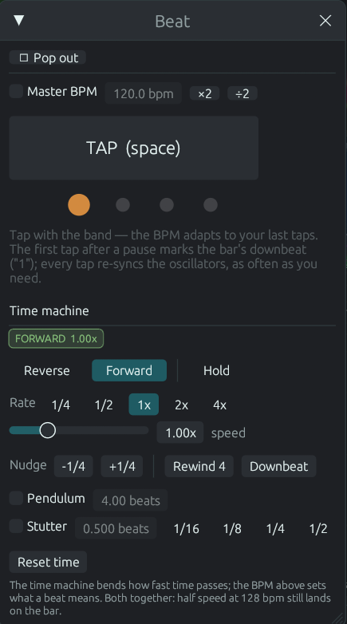
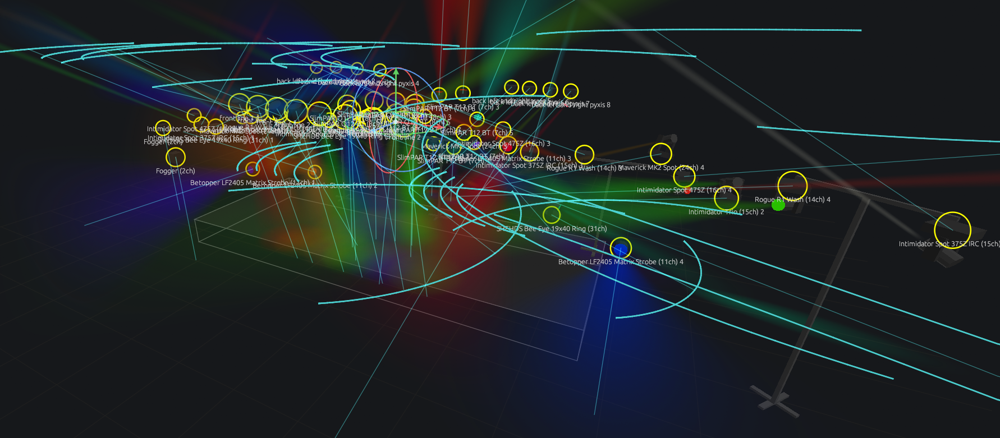
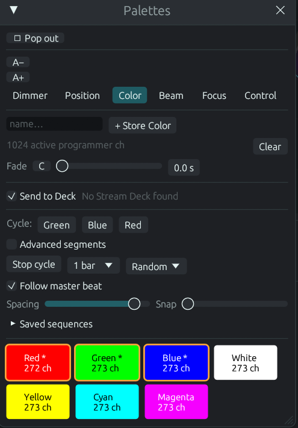
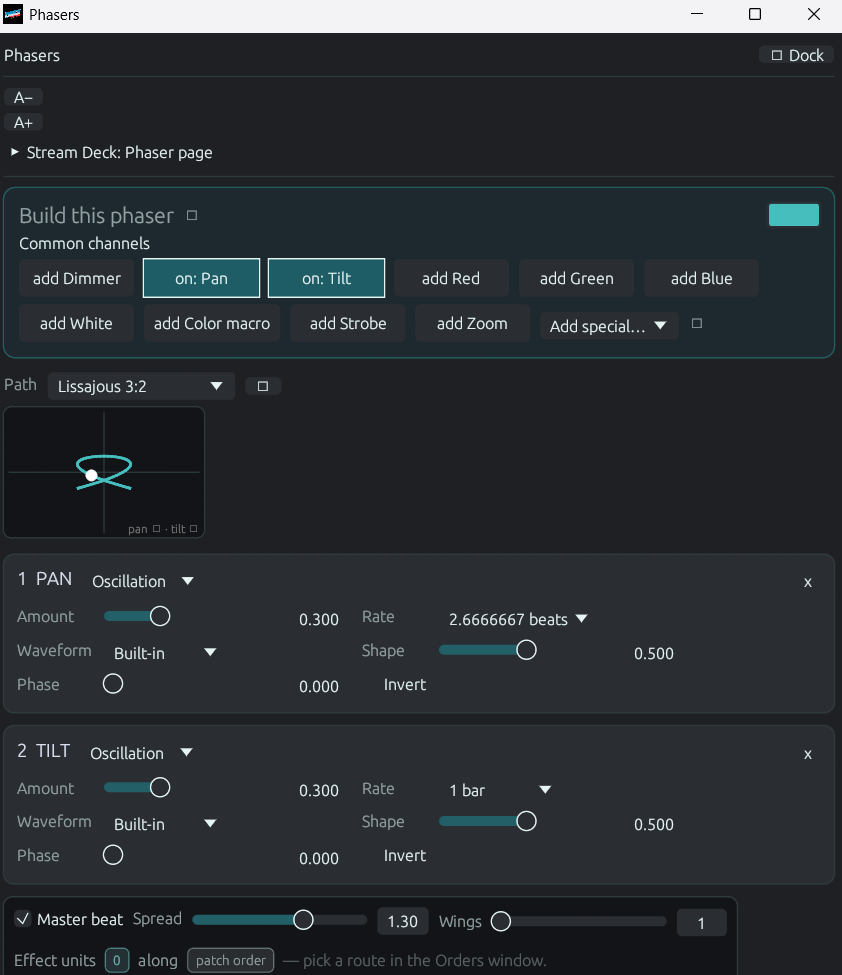

Native · Built in Rust · Open Source
DMXexpress is a native DMX fixture visualizer and live lighting controller. Patch fixtures from a 2,200-model library, build looks, run effects, sync to live audio, busk from a Stream Deck, and watch it all happen in a real-time 3D stage — no professional console required.

No rig? No problem.
The built-in 3D visualizer renders your entire rig — fixture positions, colors, movement, and volumetric beams — live as you program. That means you can learn the console, build full shows, and rehearse busking sessions from your desk.
When you're ready for the real thing, the exact same show outputs over Art-Net to physical nodes and fixtures. What you rehearsed is what you run.

A full rig in an “All 50” starting position — shaped with pan and tilt while watching the 3D result.
Hardware busking
DMXexpress drives every Elgato Stream Deck natively over USB — no Elgato software, no plugins. The keys mirror what you build in the app, drawn live with names, colors, and artwork: whole-look presets, color palettes, gobos and wheel effects, your phaser pool, and all twelve chase shapes.
On the Stream Deck Plus XL the touch strip becomes a console readout — grand master level, tempo pulsing on the beat, the active page — and the knobs are real encoders.

Designing the deck's Phaser pages in the app — one tile per key, each with its own phaser, color, label, and artwork.
Start in seconds
DMXexpress ships with ready-made show configurations and stage setups, so you can open the app and start programming immediately — no patching homework first.
Complete show configurations live under configs/ — load one and everything comes with it: patch, groups, palettes, phasers, and cue stacks.
Stage arrangements under setups/ give you fixture layouts like full rigs and back towers you can drop into any show.
All show data is plain JSON in the working directory. Read it, tweak it, version-control it — nothing is locked in a binary format.
Because everything — fixtures, stages, palettes, sequences — is simple, readable JSON, it's remarkably easy to prompt an AI assistant to add new features, build a new stage layout, or generate fixture profiles for you. Describe the rig you want; get a stage you can rehearse on tonight.

The Beat window: tap along, watch the bar, then bend time with the transport below.
Sound-reactive
Open the Audio window and pick any source your computer can hear — on Windows that includes plain system audio, so you can play a track and light it with zero cabling. DMXexpress watches the spectrum, and a beat tracker taps the tempo for you like a very patient drummer.
Then draw trigger bands straight onto the spectrum: when the bass crosses the line, throw a palette at a group. When the highs sparkle, fire a scene. Attack, release, and merge behaviour are all yours to shape.
The full console, explained
Each part of DMXexpress maps to a familiar lighting-console concept. Pick any card to jump straight to its how-to in the guide.
Your scratchpad. Select fixtures and set dimmer, color, position, and beam values directly. Changes are temporary until you store them somewhere reusable.
How to use itSave any fixture selection — all spots, back towers, front wash — and recall it with one tap. Chain groups together, or fold one into a single super-fixture that effects treat as one light.
How to use itEffects normally fan out in fixture number order. Build your own route instead: shift-click groups to chain them, then store that chain as the path every spread, phaser, and palette cycle travels.
How to use itReusable building blocks for color, position, dimmer, beam, focus, and control values. Update the palette once and every look that uses it follows.
How to use it2,200+ models and 7,400+ patchable modes built from the Open Fixture Library, QLC+, and GDTF Share — searchable by name and maker right in the Patch window.
How to use itReal projection in the visualizer: haze breaks into the gobo's rays and the pool shows the projected image. Pick slots by picture, or assign any PNG of your own.
How to use itCapture what the programmer is doing — waves, phase and all — and replay it as its own layer. Run several at once with Override, Highest, or Add merging.
How to use itLiving effects: movement sweeps, intensity pulses, chases, and color waves. Edit the phaser beside the live 3D result and tune it in real time.
How to use itSnapshots of the programmer you can bring back instantly — perfect for starting positions and go-to looks you reach for constantly.
How to use itRecord looks as cues with tracking and fade timing, then step through your show one go at a time — theatre-style playback.
How to use itHands-on faders for live control, with a Grand Master over everything. Assign stacks and effects, then busk the show in the moment.
How to use itPlace fixtures, towers, and truss; select lights on stage; and watch volumetric beams — gobo projection included — respond live. Pre-viz and programming feedback in one.
How to use itSends two contiguous DMX universes at ~40 fps with automatic node discovery. Optional ShowBuddy fixture-patch import on macOS.
How to use itTwelve spatial shapes — spheres, ripples, comets, spirals, cascades, chevrons, checkers and more — that inject a preset as a moving pattern through your stage in three dimensions.
How to use itTap along with the band and every effect locks to the song. Then bend time itself: run the show backwards, at half or quadruple rate, nudge by a quarter beat, or set it swinging on a pendulum.
How to use itListen to anything the computer plays, watch the spectrum, let the beat tracker tap for you, and draw trigger bands — when the bass crosses the line, throw a look at a group.
How to use itNative Elgato Stream Deck support: presets, palettes, gobos, phasers, and chases on real keys, with knobs for the grand master, the tempo, and the programmer.
How to use itF34 straight runs and curved radius truss with snap-on mount slots, plus towers — placed with 3D gizmos. And any window pops out to its own OS window for a second monitor.
How to use itLearn it properly
The guide is split into categories, then a page per window — so you read the three paragraphs you actually need instead of scrolling one giant manual.
What DMXexpress is, installing it, the screen layout, the Programmer, and a first show you can build in one sitting.
5 topicsPatching from the 2,200-model library, the fixtures panel, the 3D stage, trusses and towers, the inspector, settings, and whole-show configs.
8 topicsChannel control, groups, custom effect orders, palettes and why they are referenced, gobo picking, presets, layered scenes, and transition timing.
8 topicsPhasers and their component builder, the oscillator and custom waveforms, chases, palette sequences, audio triggers, and beat sync with the time machine.
6 topicsCue stacks and tracking, the decks executor bar, the Stream Deck surface, the full command-line vocabulary, and saved views.
5 topicsArt-Net targets, the DMX monitor, freeze versus blackout, the log, files on disk, script plugins, and a troubleshooting page.
7 topicsHow it fits together
Search the 2,200-model library, use a built-in profile, or import a ShowBuddy patch on macOS.
Place fixtures, towers, and truss in the 3D stage view — or start from an included sample setup.
Pick fixtures directly on stage and save the selections you use most as Groups.
Build looks in the Programmer while watching the visualizer respond live.
Keep reusable values as Palettes, Presets, and Phasers.
Capture cues into Stacks with tracking and fade timing.
Run the show from the Decks with faders and Grand Master — or busk it from a Stream Deck.
Select an Art-Net interface and send DMX to a node or visualizer.
See it in action
Uncropped screenshots of DMXexpress doing what it does: chases sweeping the rig, phasers mid-flight, and the palette pool that drives it all.



Extend & connect
DMXexpress now runs sandboxed script plugins, and the community lives right here on the site — a message board plus a reviewed plugin registry.
One script file adds a new effect layer, a custom control window, or a whole console re-tint. Browse the registry, drop a file on the app, done — and submit your own with a GitHub link.
Browse the marketplaceAsk questions, share show files and screenshots, post plugin links, and report bugs. Sign in with Google, pick a username, and you are in — delete anything you wrote, any time.
Join the boardDownload
Get the current Windows, macOS, or Linux release. The Windows download is one standalone executable with its runtime and built-in profiles included.
Get started
You'll need a current Rust toolchain with Cargo, a GPU supported by wgpu, and macOS or a compatible Linux desktop. An Art-Net node is only needed for live output — the visualizer works with nothing else on the network.
# run in development
cargo run
# optimized build
cargo build --release
./target/release/dmxpress
# run the tests
cargo testNetwork safety: DMXexpress can transmit live lighting data over Art-Net. Confirm the selected interface, universe, patch, and Grand Master before connecting to a live rig.
Open source
DMXexpress is under active development and licensed under the Mozilla Public License 2.0 — use it, modify it, and build on it. Issues, testing feedback, fixture profiles, and code contributions are all welcome.
The plugin system shipped: sandboxed scripts already add layers, windows, and looks — browse or submit plugins here. Next up: more output protocols, larger universe counts, and richer plugin hooks.